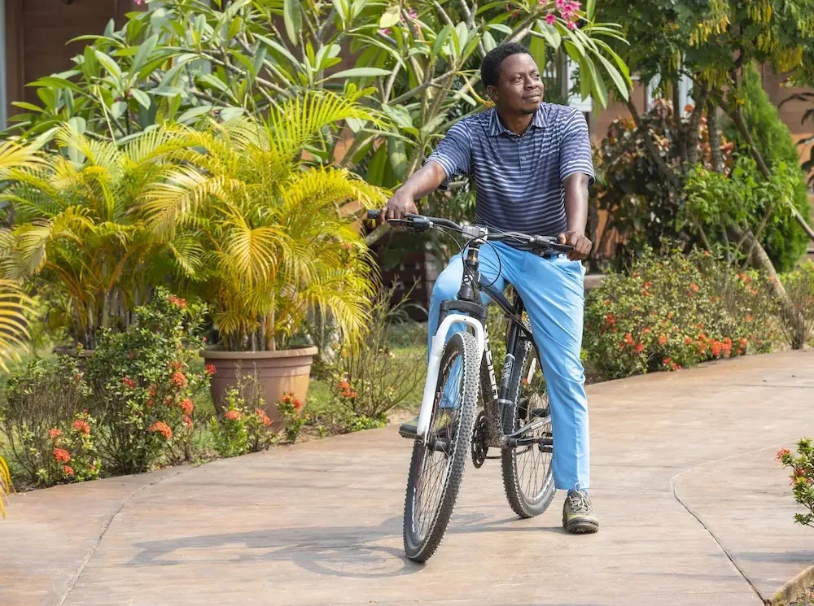

Water · Quiet pace
On the water
Fishing, swimming, pontoon boating and pedal boating appear in Lakowe’s activity list.
Outdoors · Lakowe Lakes
Water, movement and evenings outdoors. Lakowe’s activities page lists experiences across the estate; this concept groups them by the kind of day you might be planning.

Find your kind of outside
The activity names below come from Lakowe’s official activities hub. The hub and its detail pages do not establish current schedules, fees or access rules.
Fishing, swimming, pontoon boating and pedal boating appear in Lakowe’s activity list.

Cycling, fitness, tennis and archery are among the experiences named on the site.

Movie Under the Stars and bonfire are listed alongside the daytime activities.
From Lakowe’s gallery
These photographs are from Lakowe’s public activity pages and include historical event images. They show the place, not a promise that an activity is currently running.
Some official activity photography is dated 2022–23. Confirm that an activity is open, bookable and suitable for your visit before travelling.
Separate destination
Lakowe’s GolfX site is a distinct Trackman-enabled golf and social experience. Open its current page for details.